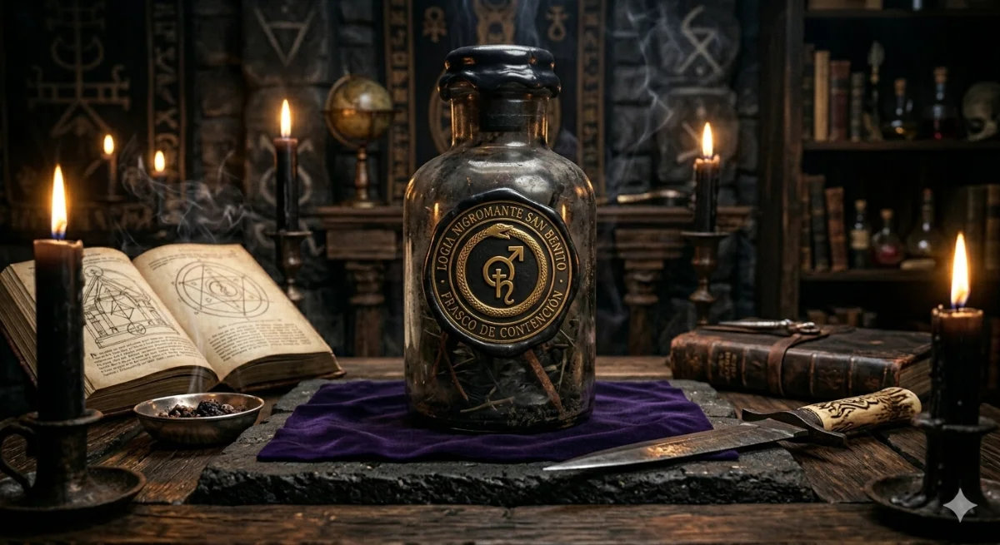

El Secreto de la Piel de Víbora de Cascabel en la Alta Hechicería
En el bastión de la brujería de alta jerarquía, ciertos elementos de origen biológico poseen una carga conductora inigualable. Entre ellos, la piel de víbora de cascabel destaca como uno de los recursos más valiosos, cotizados y determinantes para la ejecución de obras definitivas. Dentro de los altares de consagración, este componente no se emplea de forma decorativa, sino que se integra como un transmutador activo para purificar cargas residuales densas y neutralizar ataques esotéricos masivos. El Maestro Babalawo San Benito, practicante con nivel de experiencia +100, utiliza la piel de cascabel para estructurar defensas infranqueables contra trabajos de destrucción diseñados para desestabilizar la salud, las finanzas o el entorno familiar de sus consultantes.
La efectividad de este amuleto radica en su naturaleza biológica. La serpiente representa el cambio constante, el desprendimiento de lo viejo y la posesión de un veneno letal capaz de defender su territorio ante cualquier amenaza. Al consagrar esta piel mediante la metodología de Grado Terminus, se logra infundir esa misma letalidad en un plano sensitivo y corporal, cortando de raíz infestaciones complejas provocadas por muertos oscuros o velaciones hostiles. Este soporte se convierte en un imán esotérico que reordena las corrientes de energía a tu favor, garantizando que el éxito y la prosperidad fluyan hacia ti mientras tus enemigos quedan completamente anulados.

Neutralización Crítica: Corte de Brujería Negra y Cargas Pesadas
El primer y más urgente uso de la piel de víbora de cascabel dentro del altar de ejecución es la purificación y el despojo de maleficios graves. Ciertas corrientes de santería y hechicería oscura, cuando son ejecutadas con intenciones destructivas por operadores rivales, tienen la capacidad de socavar por completo la estabilidad de una persona. Estas prácticas suelen ligar muertos o entidades de bajo plano que se adhieren al aura del consultante, transformándose en una carga sumamente pesada que sabotea los negocios, rompe las relaciones sentimentales y deteriora la salud física y mental sin dejar rastro médico.
Para contrarrestar esta clase de intervenciones nocivas, la piel de víbora actúa con una violencia ritual controlada. Gracias a las virtudes de su veneno y su instinto de supervivencia natural, el amuleto penetra en el tejido sensitivo y corporal de quien lo porta para quebrar los amarres más resistentes. Su acción destruye de manera inmediata:
- Velaciones Oscuras: Apaga de raíz la influencia de cirios o entierros destinados a congelar tu crecimiento económico o profesional.
- Samientos por Santería de Bajo Plano: Rompe el vínculo de muertos obsesores enviados para desestabilizar tu mente o infundir fatiga constante.
- Envidias y Mal de Ojo de Alta Densidad: Desvía los flujos de mala intención emitidos por personas cercanas o competidores envidiosos.
Al portar esta reliquia debidamente sellada en el altar, el consultante experimenta una liberación inmediata de hombros y mente. El amuleto absorbe el impacto de los ataques y repele a la gente malintencionada, asegurando que tu campo áurico permanezca blindado y limpio frente a cualquier intento de agresión futura.
El Amuleto Base Imán: Dominación y Atracción de Abundancia
Más allá de sus propiedades defensivas de limpieza, la piel de víbora de cascabel es un extraordinario dinamizador de fortuna cuando se consagra bajo los protocolos de dominación ritual. Dentro de la ingeniería esotérica, este material se puede programar en formato de Amuleto o Talismán Base Imán, actuando como un centro de gravedad que arrastra la riqueza, el dinero constante y la prosperidad material hacia las manos de su poseedor legítimo.
La particularidad de esta obra es su versatilidad de carga. Al ser un conductor neutro de inmenso poder, el Maestro San Benito puede inyectarle frecuencias específicas según las necesidades y el pedimento del consultante, ajustando la potencia litúrgica a elegir:
- Atracción de Oportunidades y Negocios: Dinamiza las ventas, atrae socios de gran capital y destraba herencias o proyectos financieros congelados.
- Soberanía y Relaciones de Éxito: Facilita la consolidación de alianzas estratégicas, mejora tu magnetismo social y te otorga una ventaja competitiva en tu entorno.
- Apertura de Caminos Sentimentales: Limpia las impurezas que impiden encontrar una pareja estable, potenciando el atractivo personal y la seguridad propia.
Este talismán se carga sobre la base de tus metas más ambiciosas. Al llevarlo contigo en tu día a día, su vibración actúa de manera constante, modificando las decisiones de quienes te rodean para que sus acciones jueguen a tu favor. Es la llave maestra para dominar el mercado, asegurar tus inversiones y consolidar una posición de alta jerarquía económica.
Garantía de Blindaje y Retorno de Poder
La brujería de ejecución real no deja cabos sueltos. Utilizar la piel de víbora de cascabel como escudo y catalizador es la decisión más inteligente para quienes se niegan a ser víctimas de las circunstancias o de los ataques ocultos de terceros. Al integrar esta reliquia en tu vida, no solo cortas los lazos de la brujería negra, sino que reclamas tu derecho legítimo a la soberanía, el éxito y la paz existencial.
Si deseas analizar tu situación actual y determinar el nivel de potencia requerido para tu obra, te sugerimos revisar los textos de apoyo sobre procesos de liberación y corte de daños en nuestra plataforma de Wix. La seguridad de tu legado exige la intervención de un especialista con autoridad real. No postergues tu tranquilidad financiera y espiritual.
Consagre su Amuleto de Alta Jerarquía
Ordene la preparación de su Talismán Base Imán con piel de cascabel. Coordine los detalles de su pedimento de forma directa con el Maestro San Benito vía WhatsApp.
Solicitar Amuleto en el Altar